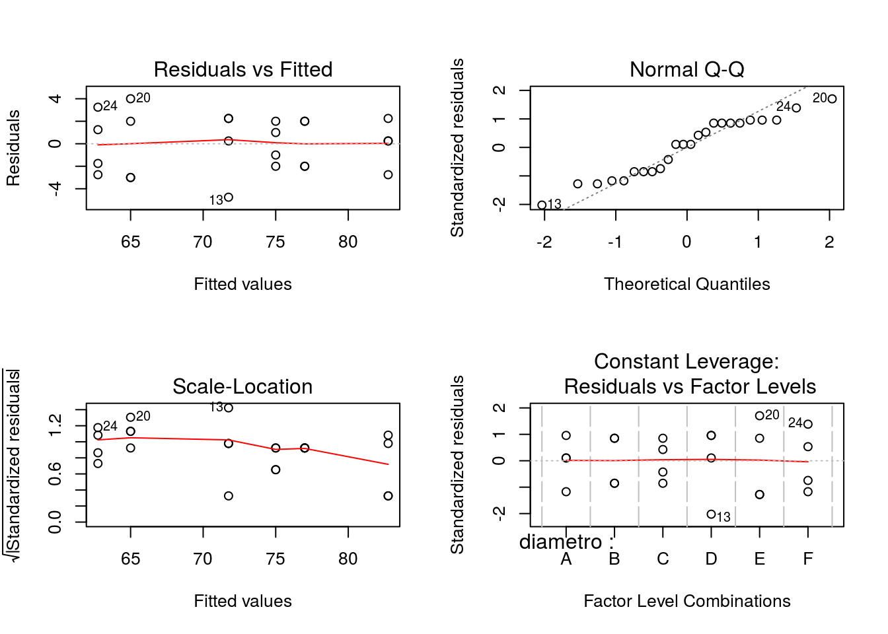
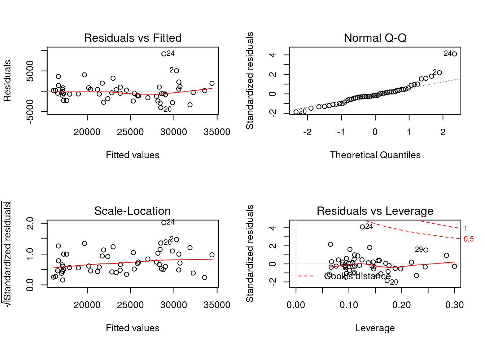
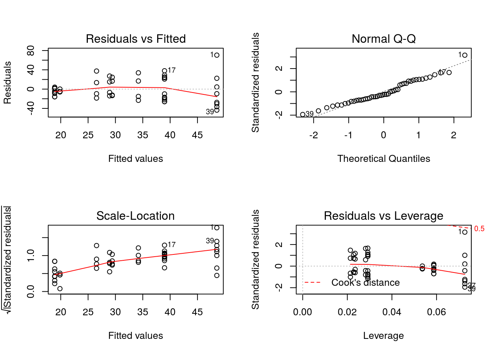
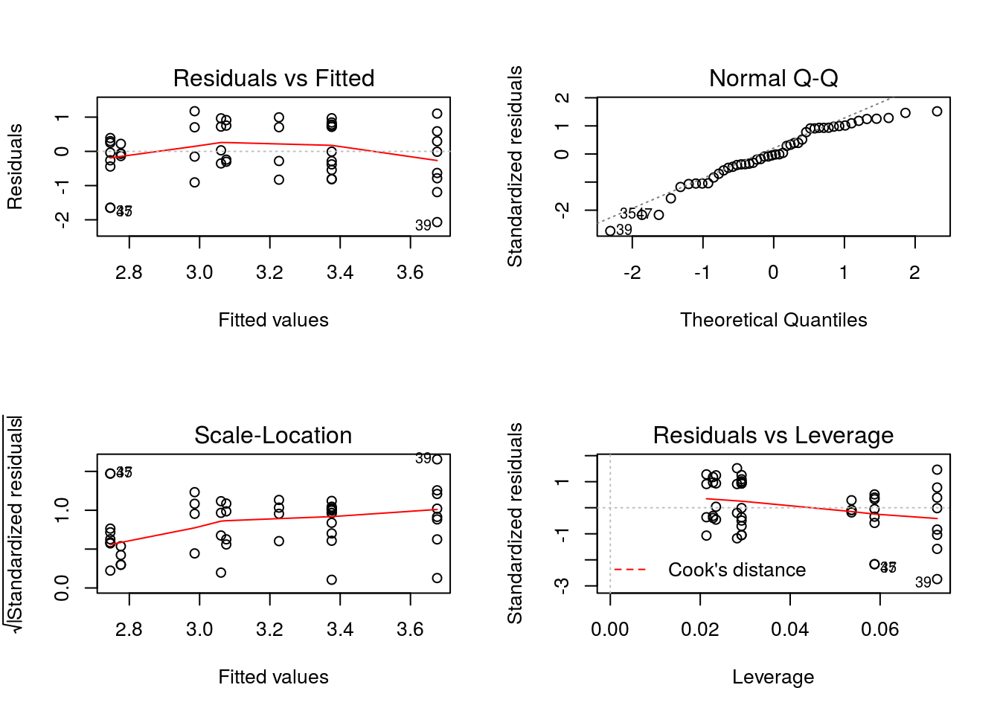
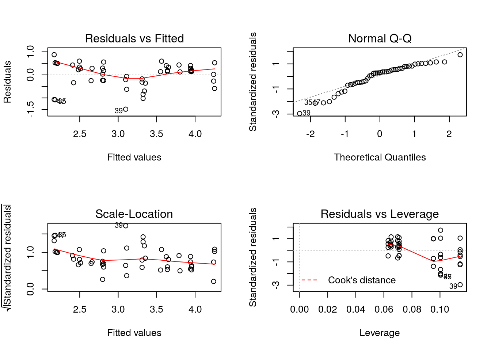

Capítulo 1 Curso 2016-17
1.1 PEC 13 marzo 2017 (Diseño de experimentos)
1.1.1 Ejercicio B1
En un artículo de Environment International (vol. 18, n.º 4) se describe un experimento en el que se investiga la cantidad de radón liberado en las duchas. Para ello se diseñó un experimento en el que se utilizaron diferentes tipos de duchas (en función del diámetro de los orificios de los rociadores) por las que se dejaba correr agua enriquecida con radón. Los datos del experimento se muestran en el archivo radon.txt
¿El tamaño de los orificios afecta al porcentaje promedio de radón liberado? Utilizar \(\alpha\) = 0.05 (es necesario especificar el modelo y los contrastes que se están utilizando para responder a la pregunta).
Proporciona un intervalo de confianza al 95% para el porcentaje promedio de radón liberado cuando el diámetro de los orificios es 1.40
Contrastar si el porcentaje promedio de radón liberado cuando el diámetro de los orificios es 1.40 es igual al 75% del porcentaje promedio cuando el diámetro de los orificios es 0.71. Utilizar \(\alpha\) = 0.05
Comprueba que se cumplen las hipótesis del modelo utilizado, explicando con detalle todas las comprobaciones realizadas.
1.1.2 Ejercicio B1 - Solución
1. ¿El tamaño de los orificios afecta al porcentaje promedio de radón liberado? Utilizar \(\alpha\) = 0.05 (es necesario especificar el modelo y los contrastes que se están utilizando para responder a la pregunta).
# se leen los datos del archivo radon.txt
datos = read.table('data/radon.txt',header=T)
# del que se muestran las primeras filas
head(datos)## diametro radon
## 1 A 80
## 2 A 83
## 3 A 83
## 4 A 85
## 5 B 75
## 6 B 75El modelo que se utiliza para analizar estos datos es: \[ y_{ij} = \mu_i + u_{ij}, \quad u_{ij} \rightarrow N(0,\sigma^2), \quad i=A,\cdots,F, \quad j=1,\cdots,m \]
donde m=4. Para analizar si el tamaño de los orificios afecta al porcentaje de radón liberado planteamos el contraste
\[ H_0 : \mu_A = \mu_B = \mu_C = \mu_D = \mu_E = \mu_F \] \[ H_1 : \quad \quad \quad \text{Alguna } \mu \text{ distinta} \quad \quad \quad \quad \]
Este contraste se resuelve utilizando la tabla de Análisis de la Varianza:
# comprobamos que la variable diametro es un factor
is.factor(datos$diametro)## [1] TRUE# analisis de la varianza
mod = aov(radon ~ diametro,data = datos)
anova(mod)## Analysis of Variance Table
##
## Response: radon
## Df Sum Sq Mean Sq F value Pr(>F)
## diametro 5 1133.38 226.675 30.852 3.16e-08 ***
## Residuals 18 132.25 7.347
## ---
## Signif. codes: 0 '***' 0.001 '**' 0.01 '*' 0.05 '.' 0.1 ' ' 1Como el pvalor < \(\alpha\), se rechaza la hipótesis nula, luego hay diferencias entre porcentajes medios de radón liberado en función del tamaño de los orificios.
2. Proporciona un intervalo de confianza al 95% para el porcentaje promedio de radón liberado cuando el diámetro de los orificios es 1.40
El intervalo de confianza se calcula como:
\[ \mu_E = \bar y_{E \bullet} \pm t_{\alpha/2} \sqrt{\frac{\hat s_R^2 }{m}} \]
datosE = datos$radon[datos$diametro=="E"]
n = nrow(datos) # numero total de datos
m = 4 # numero de datos de cada nivel
K = 6 # numero de niveles
SR2 = 7.347 # varianza residual
alfa = 0.05
ta = qt(1-alfa/2,df = n-K)
IC1 = mean(datosE) - ta*sqrt(SR2/m)
IC2 = mean(datosE) + ta*sqrt(SR2/m)
print(c(IC1,IC2))## [1] 62.15269 67.847313. Contrastar si el porcentaje promedio de radón liberado cuando el diámetro de los orificios es 1.40 es igual al 75% del porcentaje promedio cuando el diámetro de los orificios es 0.71. Utilizar \(\alpha\) = 0.05
El contraste que se pide es: \[ H_0 : \mu_E = 0.75 \mu_C \] \[ H_1 : \mu_E \neq 0.75 \mu_C \]
Para resolver este contraste hay que tener en cuenta que: \[ \bar y_{E \bullet} - 0.75\bar y_{C \bullet} \rightarrow N \left( \mu_E - 0.75\mu_C, \frac{\sigma^2}{m}(1+0.75^2) \right) \]
Por tanto: \[ \frac{ (\bar y_{E \bullet} - 0.75\bar y_{C \bullet}) - (\mu_E - 0.75\mu_C)}{ \sqrt{\frac{\hat s_R^2}{m}(1+0.75^2)} } \rightarrow t_{n-6} \]
Finalmente, si \(H_0\) es cierta: \[ t_0 = \frac{ \bar y_{E \bullet} - 0.75\bar y_{C \bullet} }{ \sqrt{\frac{\hat s_R^2}{m}(1+0.75^2)} } \rightarrow t_{n-6} \]
datosC = datos$radon[datos$diametro=="C"]
t0 = ( mean(datosE) - 0.75*mean(datosC) ) / sqrt(SR2*(1+0.75^2)/m)
t0## [1] 5.165032pvalor = 1-pt(t0,df=n-K)
pvalor## [1] 3.252273e-05Como el pvalor < \(\alpha\), se rechaza la hipótesis nula.
4. Comprueba que se cumplen las hipótesis del modelo utilizado, explicando con detalle todas las comprobaciones realizadas.
par(mfrow=c(2,2))
plot(mod)
par(mfrow=c(1,1))Por tanto, se verifican las hipótesis de normalidad y homocedasticidad.
1.2 PEC 22 mayo 2017 (Regresión)
1.2.1 Ejercicio A2
En el archivo salario.txt se incluye el salario y otras características de 52 profesores pertenecientes a una Universidad del medio oeste de los Estados Unidos. Estos datos fueron recogidos en la decada de 1980 para utilizarlos en un proceso legal sobre la discriminación salarial de las mujeres. Todos los profesores incluidos en el archivo son profesores con contrato permanente en la Universidad. El archivo incluye la siguiente información:
- Sex: sexo (1:mujeres, 0:hombres)
- Rank: rango académico (1:assistant professor, 2:associate professor, 3:full professor)
- Year: numero de años en el rango actual
- Degree: titulación (1:doctor, 0:master)
- YSdeg: Numero de años transcurridos desde que obtuvo su titulación
- Salary: salario anual en dolares
Se pide:
- Para el siguiente modelo de regresión:
\[ Salary_i = \beta_0 + \beta_1 Sex_i + \beta_2 Year_i + u_i, \quad u_i \rightarrow N(0,\sigma^2) \]
1.1. Estimar los parámetros del modelo (excluir \(\sigma^2\)).
1.2. Intervalo de confianza del 99% para dichos parámetros.
1.3. Indicar qué parámetros son significativos (justificar la respuesta). ¿Existen diferencias salariales entre hombres y mujeres que trabajan en la Universidad de acuerdo al modelo estimado?
1.4. Proporcionar el valor de la Variabilidad Total, Explicada y Residual. Plantear el contraste general de regresión y resolverlo utilizando dichos valores.
- Para el siguiente modelo de regresión:
\[ Salary_i = \beta_0 + \beta_1 Sex_i + \beta_2 Year_i + \beta_3 YSdeg_i + \beta_4 Degree_i + \beta_5 RankASO_i + \beta_6 RankFULL_i + u_i, \quad u_i \rightarrow N(0,\sigma^2) \]
2.1. Estimar los parámetros del modelo (excluir \(\sigma^2\)).
2.2. Indicar qué parámetros son significativos (justificar la respuesta). ¿Existen diferencias salariales entre hombres y mujeres que trabajan en la Universidad de acuerdo al modelo estimado?
2.3. Comprobar las hipótesis del modelo (justificar la respuesta).
- A partir del modelo estimado en el apartado 2, comprobar si existen diferencias entre el salario de associate professor y full professor, es decir, resolver el contraste
\[ H_0 : \beta_5 = \beta_6; \quad H_1 : \beta_5 \neq \beta_6 \]
Nota: La matriz de varianzas-covarianzas de los parámetros estimados se calcula mediante la función vcov(m), donde m es la variable donde se ha guardado el resultado de la función lm, es decir, m = lm(y ~ x1 + x2 + ···).
1.2.2 Ejercicio A2 - Solución
0. Lectura de datos
# se leen los datos del archivo salario.txt
datos = read.table('data/salario.txt',header=T)
# del que se muestran las primeras filas
head(datos)## Degree Rank Sex Year YSdeg Salary
## 1 1 3 0 25 35 36350
## 2 1 3 0 13 22 35350
## 3 1 3 0 10 23 28200
## 4 1 3 1 7 27 26775
## 5 0 3 0 19 30 33696
## 6 1 3 0 16 21 28516# y se preparan las variables cualitativas
datos$Sex = factor(datos$Sex, labels=c("hombres","mujeres"))
datos$Rank = factor(datos$Rank, labels = c("asistant","asociate","full"))
datos$Degree = factor(datos$Degree, labels = c("master","doctor"))1. Para el siguiente modelo de regresión:
\[ Salary_i = \beta_0 + \beta_1 Sex_i + \beta_2 Year_i + u_i, \quad u_i \rightarrow N(0,\sigma^2) \]
1.1. Estimar los parámetros del modelo (excluir \(\sigma^2\)).
m1 = lm(Salary ~ Sex + Year, data = datos)
# coeficientes estimados
coef(m1)## (Intercept) Sexmujeres Year
## 18065.4054 201.4668 759.01381.2. Intervalo de confianza del 99% para dichos parámetros.
confint(m1,level=0.99)## 0.5 % 99.5 %
## (Intercept) 14721.4316 21409.379
## Sexmujeres -3698.2519 4101.186
## Year 441.8783 1076.1491.3. Indicar qué parámetros son significativos (justificar la respuesta). ¿Existen diferencias salariales entre hombres y mujeres que trabajan en la Universidad de acuerdo al modelo estimado?
Se plantean los siguientes contrastes:
\[ H_0 : \beta_i = 0; \quad H_1 : \beta_i \neq 0,\quad i = 0,1,2 \]
Los parámetros son significativos si son distintos de cero, es decir, se rechaza \(H_0\). Los p-valores de dichos contrastes los encontramos en la siguiente tabla:
summary(m1)##
## Call:
## lm(formula = Salary ~ Sex + Year, data = datos)
##
## Residuals:
## Min 1Q Median 3Q Max
## -11034.6 -3159.4 -651.8 3184.8 13706.0
##
## Coefficients:
## Estimate Std. Error t value Pr(>|t|)
## (Intercept) 18065.4 1247.8 14.478 < 2e-16 ***
## Sexmujeres 201.5 1455.1 0.138 0.89
## Year 759.0 118.3 6.414 5.37e-08 ***
## ---
## Signif. codes: 0 '***' 0.001 '**' 0.01 '*' 0.05 '.' 0.1 ' ' 1
##
## Residual standard error: 4306 on 49 degrees of freedom
## Multiple R-squared: 0.4911, Adjusted R-squared: 0.4704
## F-statistic: 23.65 on 2 and 49 DF, p-value: 6.482e-08Considerando \(\alpha=0.05\), sólo son significativos \(\beta_0\) y \(\beta_2\). Por tanto, no hay diferencias salariales entre hombres y mujeres según este modelo.
1.4. Proporcionar el valor de la Variabilidad Total, Explicada y Residual. Plantear el contraste general de regresión y resolverlo utilizando dichos valores.
# numero de datos
n = nrow(datos)
# variabilidad total
VT = (n-1)*var(datos$Salary)
VT## [1] 1785729858# variabilidad no explicada
VNE = (n-1)*var(resid(m1))
VNE## [1] 908693470# variabilidad explicada
VE = VT - VNE
VE## [1] 877036388Contraste general de regresión:
\[ H_0 : \beta_1 = \beta_2 = 0; \quad H_1 : \beta_1 \neq \beta_2 \]
# numero de regresores
K = 2
# estadistico del contraste
F0 = (VE/K)/(VNE/(n-K-1))
F0## [1] 23.64647# pvalor
1-pf(F0,df1=K,df2=n-K-1)## [1] 6.482468e-08Como p-valor < \(\alpha\), se rechaza la hipótesis nula (como comprobación, en la última línea de la tabla proporcionada por summary(m1) se puede observar el valor del estadístico del contraste y el pvalor correspondiente).
2. Para el siguiente modelo de regresión:
\[ Salary_i = \beta_0 + \beta_1 Sex_i + \beta_2 Year_i + \beta_3 YSdeg_i + \beta_4 Degree_i + \beta_5 RankASO_i + \beta_6 RankFULL_i + u_i, \quad u_i \rightarrow N(0,\sigma^2) \]
2.1. Estimar los parámetros del modelo (excluir \(\sigma^2\)).
m2 = lm(Salary ~ Sex + Year + YSdeg + Degree + Rank, data = datos)
# coeficientes estimados
B = coef(m2)
B## (Intercept) Sexmujeres Year YSdeg Degreedoctor
## 17134.6610 1166.3731 476.3090 -124.5743 -1388.6133
## Rankasociate Rankfull
## 5292.3608 11118.76402.2. Indicar qué parámetros son significativos (justificar la respuesta). ¿Existen diferencias salariales entre hombres y mujeres que trabajan en la Universidad de acuerdo al modelo estimado?
Se plantean los siguientes contrastes:
\[ H_0 : \beta_i = 0; \quad H_1 : \beta_i \neq 0,\quad i = 0,1,\cdots,6 \]
Los parámetros son significativos si son distintos de cero, es decir, se rechaza \(H_0\). Los p-valores de dichos contrastes los encontramos en la siguiente tabla:
summary(m2)##
## Call:
## lm(formula = Salary ~ Sex + Year + YSdeg + Degree + Rank, data = datos)
##
## Residuals:
## Min 1Q Median 3Q Max
## -4045.2 -1094.7 -361.5 813.2 9193.1
##
## Coefficients:
## Estimate Std. Error t value Pr(>|t|)
## (Intercept) 17134.66 1197.70 14.306 < 2e-16 ***
## Sexmujeres 1166.37 925.57 1.260 0.214
## Year 476.31 94.91 5.018 8.65e-06 ***
## YSdeg -124.57 77.49 -1.608 0.115
## Degreedoctor -1388.61 1018.75 -1.363 0.180
## Rankasociate 5292.36 1145.40 4.621 3.22e-05 ***
## Rankfull 11118.76 1351.77 8.225 1.62e-10 ***
## ---
## Signif. codes: 0 '***' 0.001 '**' 0.01 '*' 0.05 '.' 0.1 ' ' 1
##
## Residual standard error: 2398 on 45 degrees of freedom
## Multiple R-squared: 0.855, Adjusted R-squared: 0.8357
## F-statistic: 44.24 on 6 and 45 DF, p-value: < 2.2e-16Considerando \(\alpha=0.05\), sólo son significativos \(\beta_0\), \(\beta_2\), \(\beta_5\) y \(\beta_6\). Por tanto, no hay diferencias salariales entre hombres y mujeres según este modelo.
2.3. Comprobar las hipótesis del modelo (justificar la respuesta).
par(mfrow=c(2,2))
plot(m2)
par(mfrow=c(1,1))3. A partir del modelo estimado en el apartado 2, comprobar si existen diferencias entre el salario de associate professor y full professor, es decir, resolver el contraste
\[ H_0 : \beta_5 = \beta_6; \quad H_1 : \beta_5 \neq \beta_6 \]
El contraste se puede reescribir como:
\[ H_0 : \beta_5 - \beta_6 = 0; \quad H_1 : \beta_5 - \beta_6 \neq 0 \]
Para resolver este contraste sabemos que:
\[ \hat \beta_5 \rightarrow N(\beta_5, \sigma^2 q_{55}), \quad \hat \beta_6 \rightarrow N(\beta_6, \sigma^2 q_{66}) \]
Por tanto,
\[ \hat \beta_5 - \hat \beta_6 \rightarrow N(\beta_5 - \beta_6, \sigma^2 (q_{55} + q_{66} - 2q_{56})) \]
Si la hipótesis nula es cierta
\[ \frac{\hat \beta_5 - \hat \beta_6}{\sqrt{s_{R}^2 (q_{55} + q_{66} - 2q_{56})}} \rightarrow t_{n-K-1} \]
Por otro lado, llamando \(Qe = s_R^2*Q\), se tiene que:
Qe = vcov(m2)
Qe## (Intercept) Sexmujeres Year YSdeg Degreedoctor
## (Intercept) 1434484.143 -175386.46 -8211.078 -45833.995 -916022.04
## Sexmujeres -175386.456 856677.75 43881.635 -31844.749 -239806.22
## Year -8211.078 43881.63 9008.586 -4393.645 -27001.58
## YSdeg -45833.995 -31844.75 -4393.645 6004.123 51773.09
## Degreedoctor -916022.036 -239806.22 -27001.580 51773.089 1037845.20
## Rankasociate -155469.094 424849.95 29760.599 -50059.605 -205572.43
## Rankfull 426947.845 447403.15 24578.642 -77629.177 -715026.18
## Rankasociate Rankfull
## (Intercept) -155469.09 426947.85
## Sexmujeres 424849.95 447403.15
## Year 29760.60 24578.64
## YSdeg -50059.61 -77629.18
## Degreedoctor -205572.43 -715026.18
## Rankasociate 1311936.61 1056595.99
## Rankfull 1056595.99 1827288.64t0 = (B[[6]] - B[[7]])/(sqrt(Qe[6,6]+Qe[7,7]-2*Qe[6,7]))
t0## [1] -5.752012# pvalor
2*pt(t0,df=n-6-1)## [1] 7.278088e-07Como p-valor < \(\alpha\), se rechaza la hipótesis nula, es decir, hay diferencias significativas entre el salario de associate professor y full professor.
Podemos comprobar este apartado utilizando los datos del archivo:
# cambiamos la referencia de la variable cualitativa Rank
datos$Rank = relevel(datos$Rank,ref = 'asociate')
m3 = lm(Salary ~ Sex + Year + YSdeg + Degree + Rank, data = datos)
summary(m3)##
## Call:
## lm(formula = Salary ~ Sex + Year + YSdeg + Degree + Rank, data = datos)
##
## Residuals:
## Min 1Q Median 3Q Max
## -4045.2 -1094.7 -361.5 813.2 9193.1
##
## Coefficients:
## Estimate Std. Error t value Pr(>|t|)
## (Intercept) 22427.02 1560.60 14.371 < 2e-16 ***
## Sexmujeres 1166.37 925.57 1.260 0.214
## Year 476.31 94.91 5.018 8.65e-06 ***
## YSdeg -124.57 77.49 -1.608 0.115
## Degreedoctor -1388.61 1018.75 -1.363 0.180
## Rankasistant -5292.36 1145.40 -4.621 3.22e-05 ***
## Rankfull 5826.40 1012.93 5.752 7.28e-07 ***
## ---
## Signif. codes: 0 '***' 0.001 '**' 0.01 '*' 0.05 '.' 0.1 ' ' 1
##
## Residual standard error: 2398 on 45 degrees of freedom
## Multiple R-squared: 0.855, Adjusted R-squared: 0.8357
## F-statistic: 44.24 on 6 and 45 DF, p-value: < 2.2e-161.3 FINAL 31 mayo 2017
1.3.1 Ejercicio 2 (Regresión)
El archivo burbujas.txt contiene los datos recopilados por varios estudiantes de la Universidad de Waterloo durante la realización de un experimento en el que trataban de determinar la proporción de jabón (pjabon), glicerina (pglicer) y agua (pagua) que da lugar a una mezcla óptima para producir burbujas de jabón. Establecieron 12 mezclas (de 100 ml en todos los casos) con proporciones diferentes de los tres ingredientes y realizaron los experimentos utilizando dos marcas de jabón (Joy e Ivory) y dos tipos de agua (de botella y de grifo). Los experimentos se llevaron a cabo en el orden en el que iban preparando las mezclas (exper indica el número de experimento). Con cada mezcla repitieron 5 veces el experimento y anotaron el numero de burbujas producidas (nburb1, nburb2, …, nburb5; nburb es la suma de los 5 repeticiones).
Para el modelo de regresión simple: variable respuesta = log(nburb), regresor = pjabon
1.1. Escribir la ecuación del modelo y estimar los parámetros
1.2. Calcular un intervalo de confianza del 95% para todos los parámetros estimados.
1.3. Plantear y resolver el contraste individual y el general de regresión. ¿Qué relación hay entre dichos contrastes? ¿Es influyente la proporción de jabón en el número de burbujas producido?
1.4. ¿Es necesario utilizar logaritmos en la variable respuesta?¿Por qué?
1.5. Utilizando los modelos de regresión simple correspondientes, justificar si la proporción de agua y la proporción de glicerina son influyentes en el número de burbujas producido.
1.6. ¿Por qué no es buena idea utilizar el siguiente modelo de regresión: variable respuesta = log(nburb); regresores = pjabon, pagua, pglicer?
Para estudiar la influencia del tipo de jabón y del tipo de agua, estimar el siguiente modelo de regresión: variable respuesta: log(nburb); regresores: pjabon, tjabon, tagua.
2.1. Escribir la ecuación del modelo y los valores de los parámetros estimados.
2.2. Calcular un intervalo de confianza del 95% para todos los parámetros estimados.
2.3. Plantear y resolver los contrastes individuales y contraste general de regresión. ¿Qué parámetros son influyentes en el número de burbujas producido?
2.4. Calcular la variabilidad total, variabilidad explicada y variabilidad no explicada.
2.5. ¿Se cumplen las hipótesis del modelo?
El modelo final que se ha estimado con los datos es:
\[ log(nburb) = 2.288 + 14.052*pjabon - 24.79*pjabon^2 - 0.5428*tjabon - 3.282*pjabon*tjabon \]
donde la varianza residual es igual a 0,1866 y
\[ (X^T X)^{-1} = \begin{bmatrix} 0.2863 & -2.5353 & 4.9025 & -0.165 9 & 0.6793 \\ -2.5353 & 32.3111 & -75.5408 & 0.6793 & -3.7140 \\ 4.9025 & -75.5408 & 199.5456 & 0.0000 & 0.0000 \\ -0.1659 & 0.6793 & 0.0000 & 0.3318 & -1.3587 \\ 0.6793 & -3.7140 & 0.0000 & -1.3587 & 7.4281 \end{bmatrix} \]
Utilizando esta información:
3.1. Realizar los contrastes individuales e interpretar el resultado.
3.2. Calcular el coeficiente de determinación y compararlo con el del modelo del segundo apartado.
1.3.2 Ejercicio 2 - Solución
0. Lectura de datos
# se leen los datos del archivo burbujas.txt
datos = read.table('data/burbujas.txt',header=T)
# del que se muestran las primeras filas
head(datos)## exper pagua pjabon pglicer tjabon tagua nburb1 nburb2 nburb3 nburb4
## 1 2 0.60 0.35 0.05 joy botella 19 25 25 25
## 2 3 0.60 0.25 0.15 joy botella 13 10 14 12
## 3 20 0.65 0.35 0.00 joy botella 9 9 7 6
## 4 32 0.65 0.25 0.10 joy botella 16 7 12 13
## 5 1 0.75 0.25 0.05 joy botella 11 13 15 9
## 6 15 0.70 0.15 0.15 joy botella 7 11 11 13
## nburb5 nburb
## 1 25 119
## 2 14 63
## 3 8 39
## 4 12 60
## 5 16 64
## 6 12 541. Para el modelo de regresión simple: variable respuesta = log(nburb), regresor = pjabon
1.1. Escribir la ecuación del modelo y estimar los parámetros
Ecuación del modelo
\[ log(nburb_i) = \beta_0 + \beta_1 pjabon_i + u_i, \ u_i \rightarrow N(0,\sigma^2) \]
Estimación de los parámetros
m11 = lm(log(nburb) ~ pjabon, data = datos)
summary(m11)##
## Call:
## lm(formula = log(nburb) ~ pjabon, data = datos)
##
## Residuals:
## Min 1Q Median 3Q Max
## -2.06641 -0.39592 -0.02506 0.71849 1.17301
##
## Coefficients:
## Estimate Std. Error t value Pr(>|t|)
## (Intercept) 2.6259 0.2257 11.63 2.66e-15 ***
## pjabon 2.9999 1.0677 2.81 0.00726 **
## ---
## Signif. codes: 0 '***' 0.001 '**' 0.01 '*' 0.05 '.' 0.1 ' ' 1
##
## Residual standard error: 0.7835 on 46 degrees of freedom
## Multiple R-squared: 0.1465, Adjusted R-squared: 0.1279
## F-statistic: 7.894 on 1 and 46 DF, p-value: 0.00726\[ \Rightarrow \hat \beta_0 = 2.6259, \ \hat \beta_1 = 2.9999, \ \hat s_R = 0.7835 \]
1.2. Calcular un intervalo de confianza del 95% para todos los parámetros estimados.
confint(m11,level=0.95)## 2.5 % 97.5 %
## (Intercept) 2.1716154 3.080167
## pjabon 0.8506682 5.149073Para la varianza: \[ \frac{(n-2)\hat s_R^2}{\chi_b^2} \leq \sigma^2 \leq \frac{(n-2)\hat s_R^2}{\chi_a^2} \]
donde
Chi2_a = qchisq(0.025,df = 48-2)
Chi2_b = qchisq(0.975,df = 48-2)
# Intervalo de confianza
c(46*0.7835^2/Chi2_b, 46*0.7835^2/Chi2_a)## [1] 0.4238906 0.96838381.3. Plantear y resolver el contraste individual y el general de regresión. ¿Qué relación hay entre dichos contrastes? ¿Es influyente la proporción de jabón en el número de burbujas producido?
Contrastes individuales
\[ H_0 : \beta_0 = 0; \quad H_1 : \beta_0 \neq 0 \]
pvalor = 2.66e-15, se rechaza H0.
\[ H_0 : \beta_1 = 0; \quad H_1 : \beta_1 \neq 0 \]
pvalor = 0.00726, se rechaza H0.
Contraste general
\[ H_0 : \beta_1 = 0; \quad H_1 : \beta_1 \neq 0 \]
pvalor = 0.00726, se rechaza H0.
El contraste individual para \(\beta_1\) se resuelve con la distribución t-student, siendo el estadístico del contraste
\[ t_0 = \hat \beta_1 / \sqrt(\hat s_R^2/n) = 2.81\]
El contraste general se resuelve con la ditribución F, siendo el estadístico del contraste
\[ F_0 = VE/\hat s_R^2 = 7.894 \]
De las propiedades de las distribuciones t-student y F se puede demostrar que 2.812 = 7.894.
Por último, como se rechaza H0 para los contrastes de \(\beta_1\), tenemos que \(\beta 1 \neq 0\), luego la proporción de jabón influye en el logaritmo del número de burbujas.
1.4. ¿Es necesario utilizar logaritmos en la variable respuesta?¿Por qué?
Si no utilizamos logaritmo, el modelo estimado sería
m12 = lm(nburb ~ pjabon, data = datos)
par(mfrow=c(2,2))
plot(m12)
En el gráfico Fitted values vs Residuals se observa que no se cumple la hipótesis de homocedasticidad. Sin embargo, en el modelo con logaritmo si se cumple:
par(mfrow=c(2,2))
plot(m11)
1.5 Utilizando los modelos de regresión simple correspondientes, justificar si la proporción de agua y la proporción de glicerina son influyentes en el número de burbujas producido.
m13 = lm(log(nburb) ~ pagua, data = datos)
summary(m13)##
## Call:
## lm(formula = log(nburb) ~ pagua, data = datos)
##
## Residuals:
## Min 1Q Median 3Q Max
## -1.85031 -0.52979 0.00535 0.63460 1.26236
##
## Coefficients:
## Estimate Std. Error t value Pr(>|t|)
## (Intercept) 5.2902 0.7968 6.640 3.17e-08 ***
## pagua -2.8161 1.0497 -2.683 0.0101 *
## ---
## Signif. codes: 0 '***' 0.001 '**' 0.01 '*' 0.05 '.' 0.1 ' ' 1
##
## Residual standard error: 0.7886 on 46 degrees of freedom
## Multiple R-squared: 0.1353, Adjusted R-squared: 0.1165
## F-statistic: 7.197 on 1 and 46 DF, p-value: 0.01011El pvalor para el contraste de \(\beta_1\) es menor que \(\alpha\), luego la proporción de agua si influye.
m14 = lm(log(nburb) ~ pglicer, data = datos)
summary(m14)##
## Call:
## lm(formula = log(nburb) ~ pglicer, data = datos)
##
## Residuals:
## Min 1Q Median 3Q Max
## -2.0806 -0.4792 -0.1568 0.7989 1.6137
##
## Coefficients:
## Estimate Std. Error t value Pr(>|t|)
## (Intercept) 3.1425 0.1962 16.015 <2e-16 ***
## pglicer 0.4588 2.1916 0.209 0.835
## ---
## Signif. codes: 0 '***' 0.001 '**' 0.01 '*' 0.05 '.' 0.1 ' ' 1
##
## Residual standard error: 0.8477 on 46 degrees of freedom
## Multiple R-squared: 0.0009516, Adjusted R-squared: -0.02077
## F-statistic: 0.04382 on 1 and 46 DF, p-value: 0.8351El pvalor para el contraste de \(\beta_1\) es mayor que \(\alpha\), luego la proporción de agua no influye.
1.6. ¿Por qué no es buena idea utilizar el siguiente modelo de regresión: variable respuesta = log(nburb); regresores = pjabon, pagua, pglicer?
Porque las tres proporciones suman 1, luego si utilizamos las tres tendríamos multicolinealidad.
2. Para estudiar la influencia del tipo de jabón y del tipo de agua, estimar el siguiente modelo de regresión: variable respuesta: log(nburb); regresores: pjabon, tjabon, tagua.
2.1. Escribir la ecuación del modelo y los valores de los parámetros estimados.
Ecuación del modelo
\[ log(nburb_i) = \beta_0 + \beta_1 pjabon_i + \beta_2 Zjabon_i + \beta_3 Zagua_i + u_i, \ u_i \rightarrow N(0,\sigma^2) \]
donde Zjabon = 1 si tjabon = joy y Zjabon = 0 si tjabon = ivory; Zagua = 1 si tagua = grifo y Zagua = 0 si tagua = botella.
Estimación de los parámetros
m2 = lm(log(nburb) ~ pjabon + tjabon + tagua, data = datos)
summary(m2)##
## Call:
## lm(formula = log(nburb) ~ pjabon + tjabon + tagua, data = datos)
##
## Residuals:
## Min 1Q Median 3Q Max
## -1.4883 -0.2551 0.1493 0.3514 0.8767
##
## Coefficients:
## Estimate Std. Error t value Pr(>|t|)
## (Intercept) 2.06074 0.18857 10.928 4.03e-14 ***
## pjabon 2.99987 0.72789 4.121 0.000164 ***
## tjabonjoy 1.14322 0.15419 7.414 2.84e-09 ***
## taguagrifo -0.01291 0.15419 -0.084 0.933637
## ---
## Signif. codes: 0 '***' 0.001 '**' 0.01 '*' 0.05 '.' 0.1 ' ' 1
##
## Residual standard error: 0.5341 on 44 degrees of freedom
## Multiple R-squared: 0.6206, Adjusted R-squared: 0.5947
## F-statistic: 23.99 on 3 and 44 DF, p-value: 2.366e-09\[ \Rightarrow \hat \beta_0 = 2.06074, \ \hat \beta_1 = 2.99987, \beta_2 = 1.14322, \beta_3 = -0.01291, \ \hat s_R = 0.5341 \]
2.2. Calcular un intervalo de confianza del 95% para todos los parámetros estimados.
confint(m2,level=0.95)## 2.5 % 97.5 %
## (Intercept) 1.6806983 2.440779
## pjabon 1.5328964 4.466845
## tjabonjoy 0.8324612 1.453976
## taguagrifo -0.3236706 0.297844Para la varianza: \[ \frac{(n-2)\hat s_R^2}{\chi_b^2} \leq \sigma^2 \leq \frac{(n-2)\hat s_R^2}{\chi_a^2} \]
donde
Chi2_a = qchisq(0.025,df = 44)
Chi2_b = qchisq(0.975,df = 44)
# Intervalo de confianza
c(44*0.5341^2/Chi2_b, 44*0.5341^2/Chi2_a)## [1] 0.1955028 0.45518632.3. Plantear y resolver los contrastes individuales y contraste general de regresión. ¿Qué parámetros son influyentes en el número de burbujas producido?
Contraste general
\[ H_0 : \beta_1 = \beta_2 = \beta_3 = 0; \quad H_1 : Alguno \neq 0 \]
pvalor = 2.366e-09, se rechaza H0.
Contrastes individuales
\[ H_0 : \beta_i = 0; \quad H_1 : \beta_i \neq 0, \quad i = 0,1,2,3 \]
- i=0, pvalor = 4.03e-14, se rechaza H0.
- i=1, pvalor = 0.000164, se rechaza H0. La proporción de habón es influyente.
- i=2, pvalor = 2.84e-09, se rechaza H0. El tipo de jabón es influyente.
- i=3, pvalor = 0.933637, se acepta H0. El tipo de agua no es influyente.
2.4. Calcular la variabilidad total, variabilidad explicada y variabilidad no explicada.
VT = (48-1)*var(log(datos$nburb))
VT## [1] 33.08499VNE = 44*0.5341^2
VNE## [1] 12.55156VE = VT - VNE
VE## [1] 20.533422.5. ¿Se cumplen las hipótesis del modelo?
par(mfrow=c(2,2))
plot(m2)
Se cumplen homocedasticidad y normalidad. No se cumple linealidad.
3. El modelo final que se ha estimado con los datos es:
\[ log(nburb) = 2.288 + 14.052*pjabon - 24.79*pjabon^2 - 0.5428*tjabon - 3.282*pjabon*tjabon \]
donde la varianza residual es igual a 0,1866 y
\[ (X^T X)^{-1} = \begin{bmatrix} 0.2863 & -2.5353 & 4.9025 & -0.165 9 & 0.6793 \\ -2.5353 & 32.3111 & -75.5408 & 0.6793 & -3.7140 \\ 4.9025 & -75.5408 & 199.5456 & 0.0000 & 0.0000 \\ -0.1659 & 0.6793 & 0.0000 & 0.3318 & -1.3587 \\ 0.6793 & -3.7140 & 0.0000 & -1.3587 & 7.4281 \end{bmatrix} \]
Utilizando esta información:
3.1. Realizar los contrastes individuales e interpretar el resultado.
Contrastes
\[ H_0 : \beta_i = 0; \quad H_1 : \beta_i \neq 0, \quad i = 0,1,2,3,4 \]
El estadístico de los contrastes es:
\[ t_i = \hat \beta_i / (\sqrt{\hat s_R^2 q_{ii}}), \ i= 0,1,2,3,4; \text{ Si H0 es cierta } t_i \rightarrow t_{43}\]
#*************************************************************
t0 = 2.288/sqrt(0.1866*0.2863)
t0## [1] 9.898959# pvalor
2*(1-pt(t0,df=43))## [1] 1.173728e-12Se rechaza H0, luego \(\beta_0\) es distinto de cero.
#*************************************************************
t1 = 14.052/sqrt(0.1866*32.3111)
t1## [1] 5.722772# pvalor
2*(1-pt(t1,df=43))## [1] 9.240692e-07Se rechaza H0, luego \(\beta_1\) es distinto de cero.
#*************************************************************
t2 = 24.79/sqrt(0.1866*199.5456)
t2## [1] 4.062559# pvalor
2*(1-pt(t2,df=43))## [1] 0.0002020994Se rechaza H0, luego \(\beta_2\) es distinto de cero.
#*************************************************************
t3 = 0.5428/sqrt(0.1866*0.3318)
t3## [1] 2.181453# pvalor
2*(1-pt(t3,df=43))## [1] 0.03466404Se rechaza H0, luego \(\beta_3\) es distinto de cero.
#*************************************************************
t4 = 3.282/sqrt(0.1866*7.4281)
t4## [1] 2.787686# pvalor
2*(1-pt(t4,df=43))## [1] 0.00787307Se rechaza H0, luego \(\beta_4\) es distinto de cero.
3.2. Calcular el coeficiente de determinación y compararlo con el del modelo del segundo apartado.
El coeficiente de determinación corregido es igual a:
\[ \bar R^2 = 1 - \frac{\hat s_R^2}{\hat s_y^2} = \]
1 - 0.1866/var(log(datos$nburb))## [1] 0.7349191El coeficiente de determinación corregido del modelo del segundo apartado es igual a 0.5947. Por tanto, el nuevo modelo es mejor modelo desde el punto de vista del coeficiente de determinación.